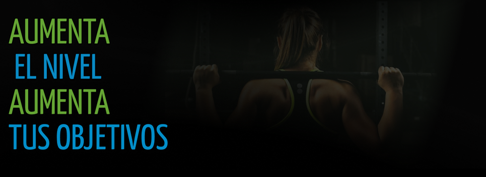
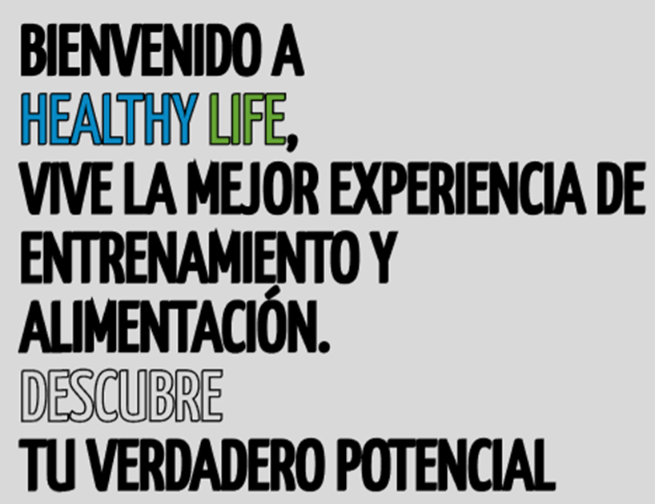
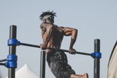
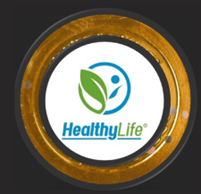
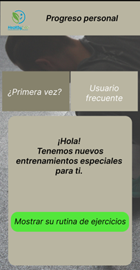
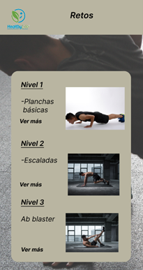
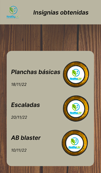
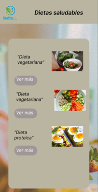

Healthy Life App
Esfuérzate, come saludable y obtén reconocimientos. Buscamos que logres tu máximo esfuerzo y consideramos tu estado físico actual como punto de inicio.

Escanea el código QR para descargar
El ejercicio te ayuda a mejorar tu salud física y mental y a contar con un sistema inmune fuerte. Llena tu vida de energía y motivación. Supera tus límites con programas de entrenamiento diseñados por profesionales de la salud, de acuerdo con tus objetivos.
 ¿Quiénes somos? Comentarios
Lo que buscamos lograr
Healthy life tiene como objetivo principal lograr un hábito saludable en las personas con ejercicios y dietas que se complementan entre sí. Además queremos que el usuario tenga información de cada cosa que realiza a fin de que pueda saber sus beneficios y como estas actividades o dietas le ayudan en su día a día
-Con nuestra app pronto seráz capaz de realizar ejercicios físicos de manera continua.
-Obtendrás una lista de dietas complementarias con tus ejercicios, su preparación y beneficios.
-Mantendrás el progreso de tu día a día.

-He incluso ganarás reconocimientos propios de la app.

¿Quiénes somos?
Somos estudiantes universitarios creadores de la Startup “HealthyLife”. Con esta aplicación buscamos incentivar a la vida saludable en personas que más lo necesitan como resultado de la pandemia o su estilo de vida. Consideramos importante el estado físico actual como punto de inicio para empatizar con el usuario y creemos que la motivación también es importante, por lo que ofrecemos reconocimientos y frases alentadoras que te acompañarán en tu camino.
-
¿Qué ofrecemos con Healthy Life ?
Progreso Personal
Sección en donde visualizarás entrenamientos o ejercicios para tí con los pasos a seguir para realizarlos.
 -
Retos
Aquí encontrarás ejercicios con un poco más de dificultad, a cambio de tu esfuerzo te recompensaremos con insignias.
 -
Insignias
Como recompensa por realizar algún ejercicio reto, las insignias que ganes se guardarán aquí. Además podrás visualizar información como nombre del ejercicio que realizaste y la fecha.
 -
Dietas saludables
Siempre que la necesites, la sección dietas saludables te brindará una lista de comidas que puedes complementar con los ejercicios y además permitirá balancear tu alimentación del día a día.

Comentarios
La app es amigable y me ha permitido equilibrar mi vida como conductor. Lo que más me gusta es que los ejercicios nunca terminan, siempre hay uno más si es que asi lo deseas.
La información sobre las dietas como su preparación o beneficios es algo que no podía faltar en una vida saludable, me gusta la app porque me da opciones de alimentación para balancear mi día a día.
Me alegra que exista gente que se preocupe por nosotros los conductores ya que, dado nuestro estilo de vida, aveces pasamos por alto estos buenos hábitos de ejercicios y alimentación saludable.
Mantengamos el contacto
Suscríbete a nuestro boletín para recibir información de entrenamiento, nutrición y promociones.